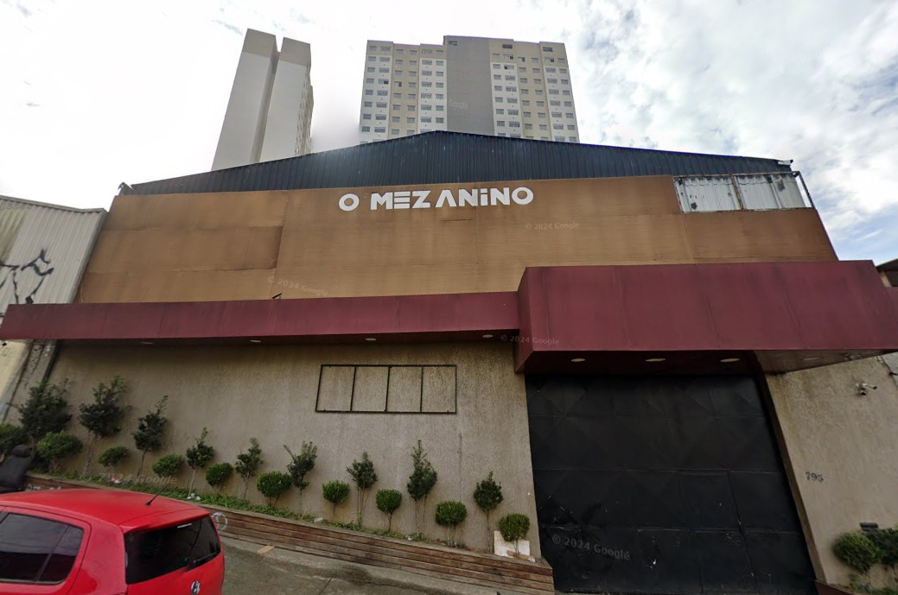

Praça dos Sonhos
A Praça dos Sonhos é um local público de lazer e entretenimento
para os habitantes da Fazenda da Juta. Frequentemente eventos acontecem
na localidade, organizados pelos prórprios moradores, tendo uma comunidadee consideravelmente
ativa. Com constância a área recebe atenção da equipe da subprefeitura, para realizar reparos na praça e efetuar uma limpeza em todo
o seu perímetro.

A casa de eventos Mezanino Show, se encontra como um lugar privado, o qual oferece serviço de restaurante,
e shows de forró para entreter os clientes regionais, constando com tal tipo de eventos todas as sextas-feiras,
sendo uma das únicas casas de forró da região.